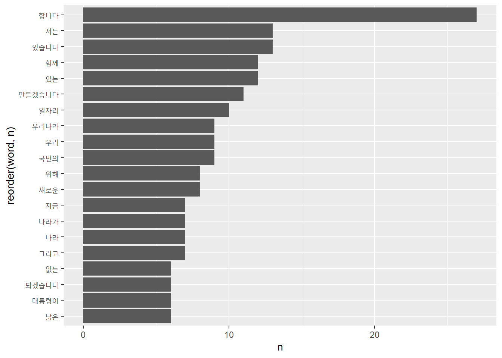
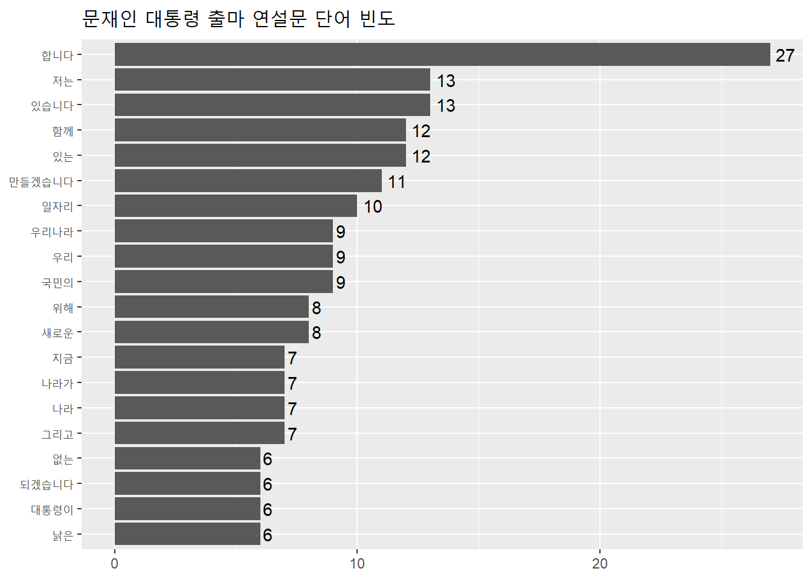
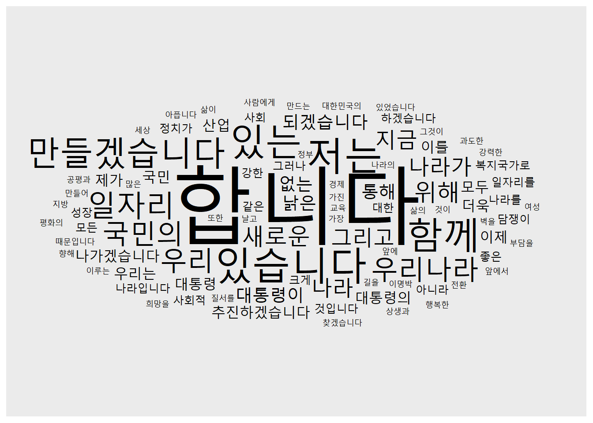
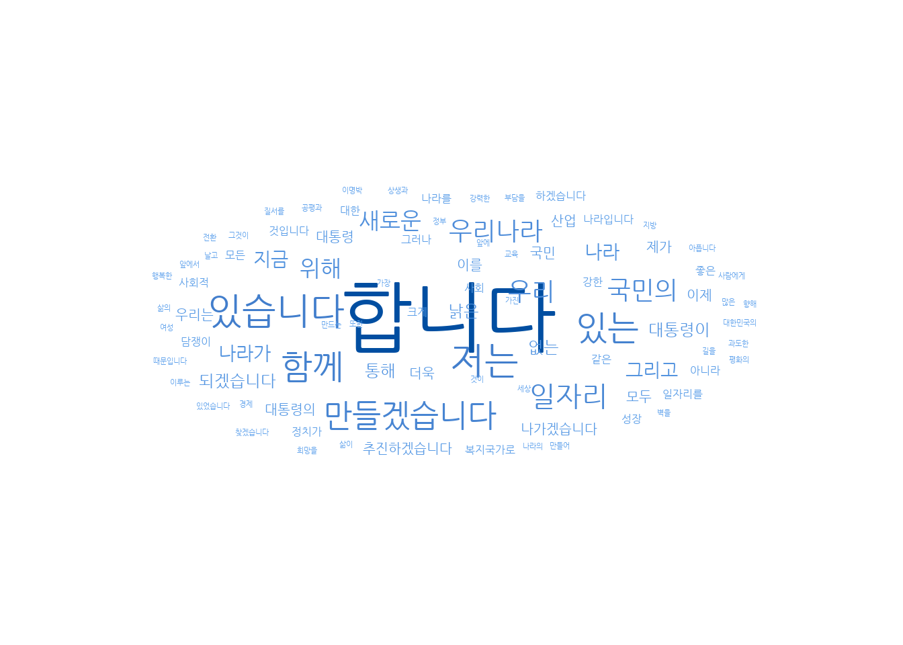
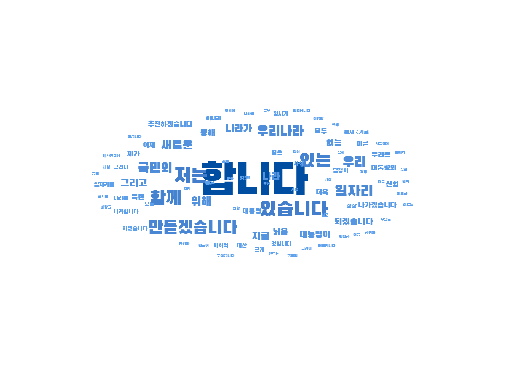
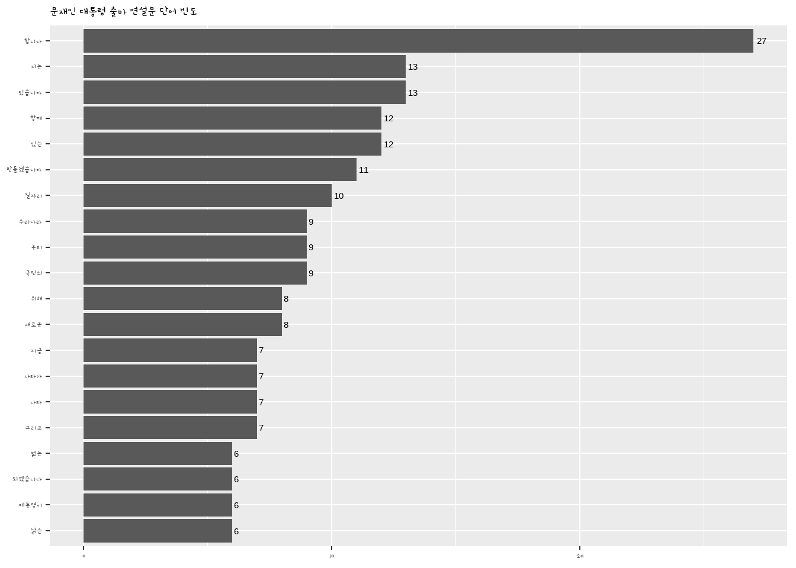
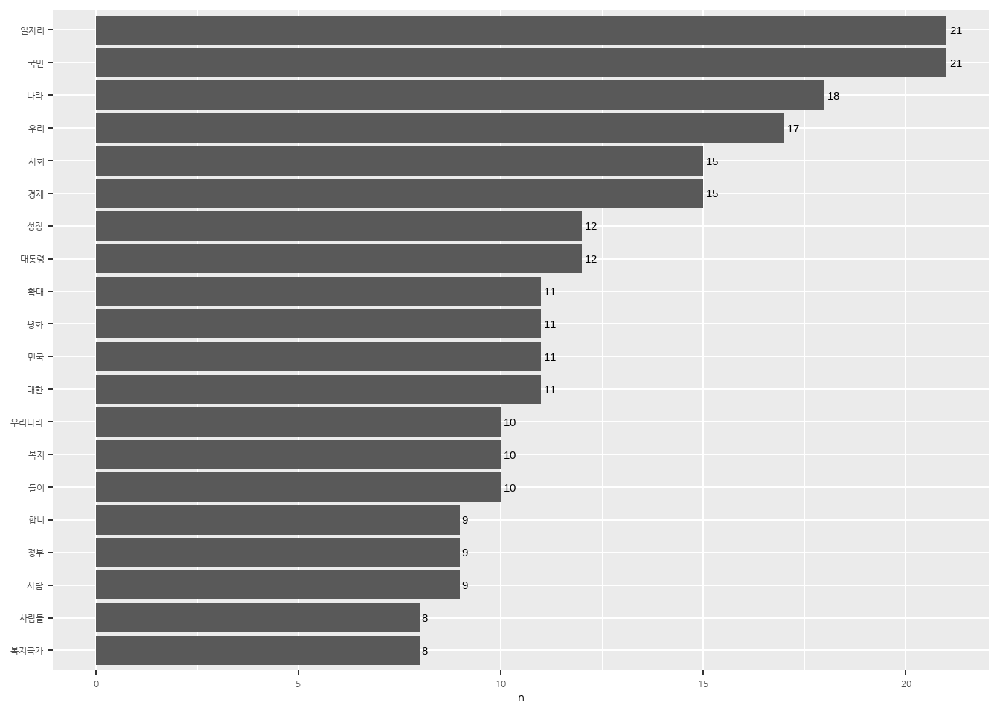
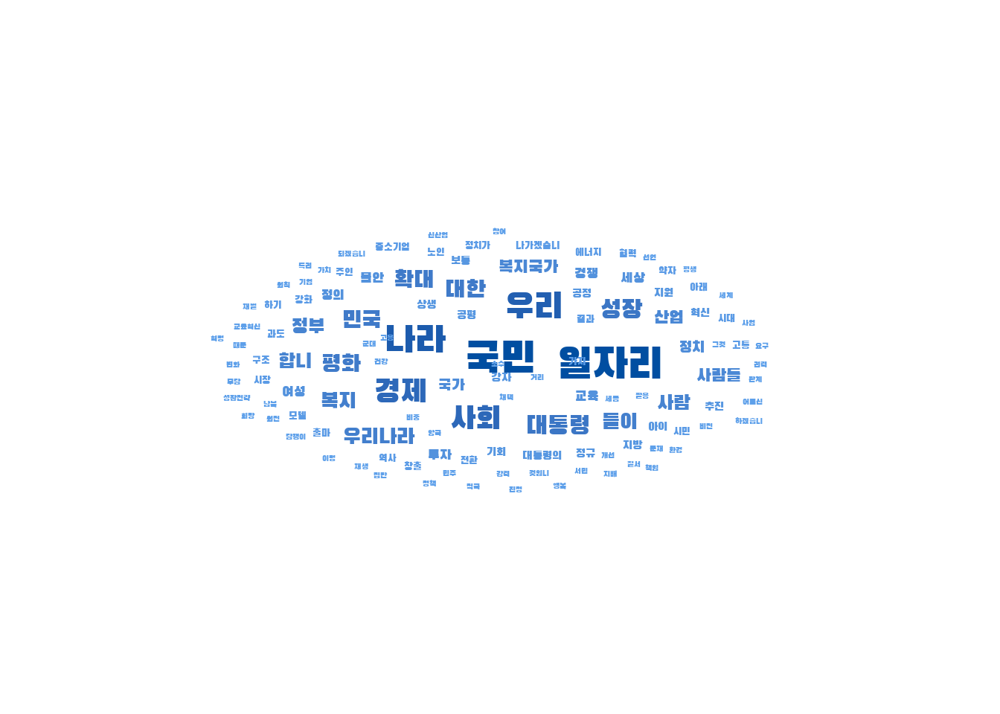

# install.packages('stringr')
# install.packages('magrittr')
# install.packages('glue')
# install.packages('stringi')
# install.packages('tidytext')
# stringr 설치가 안되면 아래 코드로 설치
# install.packages('https://cran.r-project.org/src/contrib/Archive/stringr/stringr_1.4.1.tar.gz', repos = NULL, type = 'source')NLP
Text Pre-processing & Basic Analysis
Download example data
Install required packages
Import required libraries
library(tidyverse)
library(stringr)
library(tidytext)Text Pre-processing
Import speeches
# Set to the path within the file where the current R script exists
raw_moon <- readLines('data/speech_moon.txt', encoding = 'UTF-8')
head(raw_moon)[1] "정권교체 하겠습니다!"
[2] " 정치교체 하겠습니다!"
[3] " 시대교체 하겠습니다!"
[4] " "
[5] " ‘불비불명(不飛不鳴)’이라는 고사가 있습니다. 남쪽 언덕 나뭇가지에 앉아, 3년 동안 날지도 울지도 않는 새. 그러나 그 새는 한번 날면 하늘 끝까지 날고, 한번 울면 천지를 뒤흔듭니다."
[6] "" Remove unnecessary characters - str_replace_all()
# Learn how it works with sample text
txt <- "치킨은!! 맛있다. xyz 정말 맛있다!@#"
txt[1] "치킨은!! 맛있다. xyz 정말 맛있다!@#"# string = 처리할 텍스트,
# pattern = 규칙,
# replacement = 바꿀 문자
str_replace_all(string = txt, pattern = '[^가-힣]', replacement = ' ')[1] "치킨은 맛있다 정말 맛있다 "# raw_moon의 불필요한 문자 제거하기
moon <- raw_moon %>%
str_replace_all('[^가-힣]', ' ')
head(moon)[1] "정권교체 하겠습니다 "
[2] " 정치교체 하겠습니다 "
[3] " 시대교체 하겠습니다 "
[4] " "
[5] " 불비불명 이라는 고사가 있습니다 남쪽 언덕 나뭇가지에 앉아 년 동안 날지도 울지도 않는 새 그러나 그 새는 한번 날면 하늘 끝까지 날고 한번 울면 천지를 뒤흔듭니다 "
[6] "" Remove Consecutive Spaces
txt <- "치킨은 맛있다 정말 맛있다 "
txt[1] "치킨은 맛있다 정말 맛있다 "str_squish(txt)[1] "치킨은 맛있다 정말 맛있다"# moon에 있는 연속된 공백 제거하기
moon <- moon %>%
str_squish()
head(moon)[1] "정권교체 하겠습니다"
[2] "정치교체 하겠습니다"
[3] "시대교체 하겠습니다"
[4] ""
[5] "불비불명 이라는 고사가 있습니다 남쪽 언덕 나뭇가지에 앉아 년 동안 날지도 울지도 않는 새 그러나 그 새는 한번 날면 하늘 끝까지 날고 한번 울면 천지를 뒤흔듭니다"
[6] "" Convert data to tibble structure - as_tibble()
moon <- dplyr::as_tibble(moon)
moon# A tibble: 117 × 1
value
<chr>
1 "정권교체 하겠습니다"
2 "정치교체 하겠습니다"
3 "시대교체 하겠습니다"
4 ""
5 "불비불명 이라는 고사가 있습니다 남쪽 언덕 나뭇가지에 앉아 년 동안 날지도 울…
6 ""
7 "그 동안 정치와 거리를 둬 왔습니다 그러나 암울한 시대가 저를 정치로 불러냈습…
8 ""
9 ""
10 "우리나라 대통령 이 되겠습니다"
# ℹ 107 more rowsPre-processing at once (feat. %>%)
moon <- raw_moon %>%
str_replace_all('[^가-힣]', ' ') %>% # 한글만 남기기
str_squish() %>% # 연속된 공백 제거
as_tibble() # tibble로 변환
moon# A tibble: 117 × 1
value
<chr>
1 "정권교체 하겠습니다"
2 "정치교체 하겠습니다"
3 "시대교체 하겠습니다"
4 ""
5 "불비불명 이라는 고사가 있습니다 남쪽 언덕 나뭇가지에 앉아 년 동안 날지도 울…
6 ""
7 "그 동안 정치와 거리를 둬 왔습니다 그러나 암울한 시대가 저를 정치로 불러냈습…
8 ""
9 ""
10 "우리나라 대통령 이 되겠습니다"
# ℹ 107 more rowsTokenization - unnest_tokens()
Practice with sample data
text <- tibble(value = "대한민국은 민주공화국이다. 대한민국의 주권은 국민에게 있고, 모든 권력은 국민으로부터 나온다.")
text# A tibble: 1 × 1
value
<chr>
1 대한민국은 민주공화국이다. 대한민국의 주권은 국민에게 있고, 모든 권력은 국민…Sentence-based tokenization
text %>% # 문장 기준 토큰화
unnest_tokens(input = value, # 토큰화할 텍스트
output = word, # 토큰을 담을 변수명
token = 'sentences') # 문장 기준# A tibble: 2 × 1
word
<chr>
1 대한민국은 민주공화국이다.
2 대한민국의 주권은 국민에게 있고, 모든 권력은 국민으로부터 나온다.Words-based Tokenization (Tokenization by spacing)
text %>% # 띄어쓰기 기준 토큰화
unnest_tokens(input = value,
output = word,
token = 'words')# A tibble: 10 × 1
word
<chr>
1 대한민국은
2 민주공화국이다
3 대한민국의
4 주권은
5 국민에게
6 있고
7 모든
8 권력은
9 국민으로부터
10 나온다 Character-Based Tokenization
text %>% # 문자 기준 토큰화
unnest_tokens(input = value,
output = word,
token = 'characters')# A tibble: 40 × 1
word
<chr>
1 대
2 한
3 민
4 국
5 은
6 민
7 주
8 공
9 화
10 국
# ℹ 30 more rowsTokenizing speeches (Words-based)
# 연설문 토큰화하기
word_space <- moon %>%
unnest_tokens(input = value,
output = word,
token = 'words')
word_space# A tibble: 2,025 × 1
word
<chr>
1 정권교체
2 하겠습니다
3 정치교체
4 하겠습니다
5 시대교체
6 하겠습니다
7 불비불명
8 이라는
9 고사가
10 있습니다
# ℹ 2,015 more rowsWord frequency visualization
Find word frequency - count()
# 단어 빈도 구하기 - count()
temp_word_space <- word_space %>%
count(word, sort = T)
temp_word_space# A tibble: 1,440 × 2
word n
<chr> <int>
1 합니다 27
2 수 16
3 있습니다 13
4 저는 13
5 등 12
6 있는 12
7 함께 12
8 만들겠습니다 11
9 일자리 10
10 국민의 9
# ℹ 1,430 more rowsRemove single-letter words - filter(str_count()) str_count() = Count the number of characters in a string
# 한 글자로 된 단어 제거하기 - filter(str_count())
# str_count = 문자열의 글자 수 구하기
str_count('배')[1] 1str_count('사과')[1] 2leave no more than two characters
# 두 글자 이상만 남기기
temp_word_space <- temp_word_space %>%
filter(str_count(word) > 1)
temp_word_space# A tibble: 1,384 × 2
word n
<chr> <int>
1 합니다 27
2 있습니다 13
3 저는 13
4 있는 12
5 함께 12
6 만들겠습니다 11
7 일자리 10
8 국민의 9
9 우리 9
10 우리나라 9
# ℹ 1,374 more rowsLet’s work at once
# 한 번에 작업하기
word_space <- word_space %>%
count(word, sort = T) %>%
filter(str_count(word) > 1)
word_space# A tibble: 1,384 × 2
word n
<chr> <int>
1 합니다 27
2 있습니다 13
3 저는 13
4 있는 12
5 함께 12
6 만들겠습니다 11
7 일자리 10
8 국민의 9
9 우리 9
10 우리나라 9
# ℹ 1,374 more rowsExtract frequently used words (Top 20)
# 자주 사용된 단어 추출하기
top20 <- word_space %>%
head(20)
top20# A tibble: 20 × 2
word n
<chr> <int>
1 합니다 27
2 있습니다 13
3 저는 13
4 있는 12
5 함께 12
6 만들겠습니다 11
7 일자리 10
8 국민의 9
9 우리 9
10 우리나라 9
11 새로운 8
12 위해 8
13 그리고 7
14 나라 7
15 나라가 7
16 지금 7
17 낡은 6
18 대통령이 6
19 되겠습니다 6
20 없는 6Create a bar graph - geom_col()
# 막대 그래프 만들기 - geom_col()
# mac 사용자, 그래프에 한글 지원폰트로 변경
# theme_set(theme_gray(base_family = "AppleGothic"))
ggplot2::ggplot(top20, aes(x = reorder(word, n), y = n)) + # 단어 빈도순 정렬
geom_col() +
coord_flip() # 회전
Graph Refinement
ggplot(top20, aes(x = reorder(word, n), y = n)) +
geom_col() +
coord_flip() +
geom_text(aes(label = n), hjust = -0.3) +
labs(title = '문재인 대통령 출마 연설문 단어 빈도',
x = NULL, y = NULL) +
theme(title = element_text(size = 12))
Creating a word cloud - geom_text_wordcloud()
# 워드 클라우드 만들기 - geom_text_wordcloud()
# install.packages('ggwordcloud')
library(ggwordcloud)
ggplot(word_space, aes(label = word, size = n)) +
geom_text_wordcloud(seed = 1234) +
scale_radius(limits = c(3, NA), # 최소, 최대 단어 빈도
range = c(3, 30)) # 최소, 최대 글자 크기
Graph Refinement
ggplot(word_space,
aes(label = word,
size = n,
col = n)) + # 빈도에 따라 색깔 표현
geom_text_wordcloud(seed = 1234) +
scale_radius(limits = c(3, NA),
range = c(3, 30)) +
scale_color_gradient(low = '#66aaf2', # 최소 빈도 색깔
high = '#004EA1') + # 최대 빈도 색깔
theme_minimal() # 배경 없는 테마 적용
Change the graph font 1. Loading Google Fonts - font_add_google()
# 그래프 폰트 바꾸기
# 1. 구글 폰트 불러오기 - font_add_google()
# install.packages('showtext')
library(showtext)Loading required package: sysfontsLoading required package: showtextdb# install.packages('jsonlite')
# install.packages('curl')
font_add_google(name = 'Nanum Gothic', family = 'nanumgothic')
showtext_auto()- Assign fonts to graphs
To prevent errors (or warnings), extrafont is installed and fonts in the operating system are imported into R with font_import. -> Takes some time..
(시간이 매우 오래 걸리니 수업 후에 실행해줍니다, 한 시간 정도 걸림)
# install.packages("extrafont")
library(extrafont)Registering fonts with R
Attaching package: 'extrafont'The following object is masked from 'package:showtextdb':
font_install# font_import(paths=NULL, recursive = TRUE, prompt=TRUE, pattern=NULL)# 2. 그래프에 폰트 지정하기
ggplot(word_space,
aes(label = word,
size = n,
col = n)) +
geom_text_wordcloud(seed = 1234,
family = 'nanumgothic') + # 폰트 적용
scale_radius(limits = c(3,NA),
range = c(3,30)) +
scale_color_gradient(low = '#66aaf2',
high = '#004EA1') +
theme_minimal()
Font change (Black Gothick)
# '검은고딕' 폰트 적용
font_add_google(name = 'Black Han Sans', family = 'blackhansans')
showtext_auto()
ggplot(word_space,
aes(label = word,
size = n,
col = n)) +
geom_text_wordcloud(seed = 1234,
family = 'blackhansans') + # 폰트 적용
scale_radius(limits = c(3,NA),
range = c(3,30)) +
scale_color_gradient(low = '#66aaf2',
high = '#004EA1') +
theme_minimal()
Font change (gamjaflower family)
# 3. ggplot2 패키지로 만든 그래프의 폰트 바꾸기
font_add_google(name = 'Gamja Flower', family = 'gamjaflower')
showtext_auto()
ggplot(top20, aes(x = reorder(word, n), y = n)) +
geom_col() +
coord_flip() +
geom_text(aes(label = n), hjust = -0.3) +
labs(title = '문재인 대통령 출마 연설문 단어 빈도',
x = NULL, y = NULL) +
theme(title = element_text(size = 12), text = element_text(family = 'gamjaflower')) # 폰트 적용
Optional: If you don’t’ want to specify the font using theme() every time, set the default theme font of the ggplot2 package like below.
# ggplot2 기본 테마 폰트 변경하기 --------------------------------------------------------
# 매번 theme()를 이용해 폰트를 지정하는게 번거롭다면 ggplot2 패키지 기본 테마 폰트 설정
theme_set(theme_gray(base_family = 'nanumgothic'))Morphological analysis (형태소 단위 분석)
[KoNLP] Installing the Korean Morphological Analysis Package. The order of installation is important, so be sure to do it in that order.
- Install Java and rJava packages
# install.packages('multilinguer')
library(multilinguer)- After installing Amazon Corretto, close RStudio + restart
# install_jdk()- Installing KoNLP dependencies
# install.packages(c('stringr', 'hash', 'tau', 'Sejong', 'RSQLite', 'devtools'), type = 'binary')- Installing KoNLP dependencies
# install.packages('remotes')
# remotes::install_github('haven-jeon/KoNLP',
# upgrade = 'never',
# INSTALL_opts = c('--no-multiarch'))
# 'scala-library-2.11.8.jar' 에러 발생 시, download.file 코드 실행
# download.file(url = "https://repo1.maven.org/maven2/org/scala-lang/scala-library/2.11.8/scala-library-2.11.8.jar",
# destfile = paste0(.libPaths()[1], "/KoNLP/Java/scala-library-2.11.8.jar"))library(KoNLP) # Fail to locate Checking user defined dictionary!# Checking user defined dictionary! <- This is not an error
# useNIADic()
# 다운로드 항목 출력 시, 'All' 선택하여 다운로드
# When printing download items, select 'All' to downloadTokenize using a morpheme analyzer(형태소 분석기) - see how it works with noun extraction sample text
text <- tibble(
value = c("대한민국은 민주공화국이다.",
"대한민국의 주권은 국민에게 있고, 모든 권력은 국민으로부터 나온다."))
text# A tibble: 2 × 1
value
<chr>
1 대한민국은 민주공화국이다.
2 대한민국의 주권은 국민에게 있고, 모든 권력은 국민으로부터 나온다.extraNoun(): Output nouns extracted from sentences in a list structure
# extraNoun(): 문장에서 추출한 명사를 list 구조로 출력
extractNoun(text$value)[[1]]
[1] "대한민국" "민주공화국"
[[2]]
[1] "대한민국" "주권" "국민" "권력" "국민" Extracting nouns using unnest_tokens(), outputting nouns in a tractable tibble structure
# unnest_tokens()를 이용해 명사 추출하기, 다루기 쉬운 tibble 구조로 명사 출력
library(tidytext)
text %>%
unnest_tokens(input = value, # 분석 대상
output = word, # 출력 변수명
token = extractNoun) # 토큰화 함수# A tibble: 7 × 1
word
<chr>
1 대한민국
2 민주공화국
3 대한민국
4 주권
5 국민
6 권력
7 국민 Let’s compare with spacing-based extraction
# 띄어쓰기 기준 추출과 비교해보자
text %>%
unnest_tokens(input = value,
output = word,
token = 'words')# A tibble: 10 × 1
word
<chr>
1 대한민국은
2 민주공화국이다
3 대한민국의
4 주권은
5 국민에게
6 있고
7 모든
8 권력은
9 국민으로부터
10 나온다 Extracting Nouns from Speeches
# 연설문에서 명사 추출하기
# 문재인 대통령 연설문 불러오기
raw_moon <- readLines('data/speech_moon.txt', encoding = 'UTF-8')
library(stringr)
library(textclean)
moon <- raw_moon %>%
str_replace_all('[^가-힣]', ' ') %>%
str_squish() %>%
as_tibble()
moon# A tibble: 117 × 1
value
<chr>
1 "정권교체 하겠습니다"
2 "정치교체 하겠습니다"
3 "시대교체 하겠습니다"
4 ""
5 "불비불명 이라는 고사가 있습니다 남쪽 언덕 나뭇가지에 앉아 년 동안 날지도 울…
6 ""
7 "그 동안 정치와 거리를 둬 왔습니다 그러나 암울한 시대가 저를 정치로 불러냈습…
8 ""
9 ""
10 "우리나라 대통령 이 되겠습니다"
# ℹ 107 more rows# 명사 기준 토큰화
word_noun <- moon %>%
unnest_tokens(input = value,
output = word,
token = extractNoun)
word_noun# A tibble: 1,757 × 1
word
<chr>
1 "정권교체"
2 "하겠습니"
3 "정치"
4 "교체"
5 "하겠습니"
6 "시대"
7 "교체"
8 "하겠습니"
9 ""
10 "불비불명"
# ℹ 1,747 more rowsFind word frequency
# 단어 빈도 구하기
word_noun <- word_noun %>%
count(word, sort = T) %>% # 단어 빈도 구해 내림차순 정렬
filter(str_count(word) > 1) # 두 글자 이상만 남기기
word_noun# A tibble: 704 × 2
word n
<chr> <int>
1 국민 21
2 일자리 21
3 나라 19
4 우리 17
5 경제 15
6 사회 14
7 성장 13
8 대통령 12
9 정치 12
10 하게 12
# ℹ 694 more rowsComparison with the previous spacing-based extraction
# 띄어쓰기 기준 추출과 비교
moon %>%
unnest_tokens(input = value,
output = word,
token = 'words') %>%
count(word, sort = T) %>%
filter(str_count(word) > 1)# A tibble: 1,384 × 2
word n
<chr> <int>
1 합니다 27
2 있습니다 13
3 저는 13
4 있는 12
5 함께 12
6 만들겠습니다 11
7 일자리 10
8 국민의 9
9 우리 9
10 우리나라 9
# ℹ 1,374 more rowsDo at once (Noun extraction from the speech)
# 명사 추출
moon %>%
unnest_tokens(input = value,
output = word,
token = extractNoun) %>%
count(word, sort = T) %>%
filter(str_count(word) > 1)# A tibble: 704 × 2
word n
<chr> <int>
1 국민 21
2 일자리 21
3 나라 19
4 우리 17
5 경제 15
6 사회 14
7 성장 13
8 대통령 12
9 정치 12
10 하게 12
# ℹ 694 more rowsExtract Top 20 Nouns and create a bar graph
# 상위 20개 단어 추출
top20 <- word_noun %>%
head(20)
top20# A tibble: 20 × 2
word n
<chr> <int>
1 국민 21
2 일자리 21
3 나라 19
4 우리 17
5 경제 15
6 사회 14
7 성장 13
8 대통령 12
9 정치 12
10 하게 12
11 대한민국 11
12 평화 11
13 복지 10
14 우리나라 10
15 확대 10
16 들이 9
17 사람 9
18 산업 9
19 정부 9
20 복지국가 8# 막대 그래프 만들기
library(showtext)
font_add_google(name = 'Nanum Gothic', family = 'nanumgothic')
showtext_auto()
ggplot(top20, aes(x = reorder(word, n), y = n)) +
geom_col() +
coord_flip() +
geom_text(aes(label = n), hjust = -0.3) +
labs(x = NULL) +
theme(text = element_text(family = 'nanumgothic'))
Word Cloud of Nouns extracted from the speec
# 워드 클라우드 만들기
font_add_google(name = 'Black Han Sans', family = 'blackhansans')
showtext_auto()
library(ggwordcloud)
ggplot(word_noun, aes(label = word, size = n, col = n)) +
geom_text_wordcloud(seed = 1234, family = 'blackhansans') +
scale_radius(limits = c(3,NA),
range = c(3,15)) +
scale_color_gradient(low = '#66aaf2', high = '#004EA1') +
theme_minimal()
Extract sentences with specific words
- Tokenize by sentence
# 문장 기준으로 토큰화하기
sentences_moon <- raw_moon %>%
str_squish() %>%
as_tibble() %>%
unnest_tokens(input = value,
output = sentence,
token = 'sentences')
sentences_moon# A tibble: 207 × 1
sentence
<chr>
1 정권교체 하겠습니다!
2 정치교체 하겠습니다!
3 시대교체 하겠습니다!
4 ‘불비불명(不飛不鳴)’이라는 고사가 있습니다.
5 남쪽 언덕 나뭇가지에 앉아, 3년 동안 날지도 울지도 않는 새.
6 그러나 그 새는 한번 날면 하늘 끝까지 날고, 한번 울면 천지를 뒤흔듭니다.
7 그 동안 정치와 거리를 둬 왔습니다.
8 그러나 암울한 시대가 저를 정치로 불러냈습니다.
9 더 이상 남쪽 나뭇가지에 머무를 수 없었습니다.
10 이제 저는 국민과 함께 높이 날고 크게 울겠습니다.
# ℹ 197 more rowsExtract sentences with specific words - str_detect()
# 특정 단어가 사용된 문장 추출하기 - str_detect()
# 예시
str_detect('치킨은 맛있다', '치킨')[1] TRUEstr_detect('치킨은 맛있다', '피자')[1] FALSEExample (1): Extract sentences with “국민”
# 특정 단어가 사용된 문장 추출하기, '국민'
sentences_moon %>%
filter(str_detect(sentence, '국민'))# A tibble: 19 × 1
sentence
<chr>
1 이제 저는 국민과 함께 높이 날고 크게 울겠습니다.
2 오늘 저는 제18대 대통령선거 출마를 국민 앞에 엄숙히 선언합니다.
3 존경하는 국민 여러분!
4 국민이 모두 아픕니다.
5 국민 한 사람 한 사람이 모두 아픕니다.
6 국민들에게 희망을 주는 정치가 절실하게 필요합니다.
7 국민의 뜻이 대통령의 길입니다.
8 저는 대선출마를 결심하고 국민 여러분께 출마선언문을 함께 쓰자고 제안 드렸습…
9 시민의 한숨과 눈물을 닦아주지 못하는 정치가 있었고, 오히려 국민의 걱정거리가…
10 상식이 통하는 사회, 권한과 책임이 비례하는 사회, 다름을 인정하는 세상, 개천…
11 그러나 거창하게만 들리는 이 국가비전 역시 국민의 마음속에 있었습니다.
12 더욱 낮아지고 겸손해져서 국민의 마음속으로 들어가라.
13 국민들이 제게 준 가르침입니다.
14 국민의 뜻에서 대통령의 길을 찾겠습니다.
15 문화혁신을 통해 모든 국민의 창조성을 높이고 이를 통해 기술혁신과 신산업 형성…
16 이렇게 하면 국민의 살림이 서서히 나아질 것이며 5년 뒤에는 큰 성과가 나타날 …
17 이명박 정부의 방해에도 불구하고 끝내 국민이 지켜준 세종시, 혁신도시를 지방 …
18 존경하는 국민 여러분!
19 국민의 마음에서 길을 찾는 우리나라 대통령이 되겠습니다. Example (2): Extract sentences with “일자리”
# 특정 단어가 사용된 문장 추출하기, '일자리'
sentences_moon %>%
filter(str_detect(sentence, '일자리'))# A tibble: 18 × 1
sentence
<chr>
1 빚 갚기 힘들어서, 아이 키우기 힘들어서, 일자리가 보이지 않아서 아픕니다.
2 상생과 평화의 대한민국은 공평과 정의에 바탕을 두고, 성장의 과실을 함께 누리…
3 복지의 확대를 통해 보육, 교육, 의료, 요양 등 사회서비스 부문에 수많은 일자리…
4 결국 복지국가로 가는 길은 사람에 대한 투자, 일자리 창출, 자영업 고통 경감, …
5 ‘일자리 정부’로 ‘일자리 혁명’을 이루겠습니다.
6 복지의 확대와 함께 저는 강력한 ‘일자리 혁명’을 이루고자 합니다.
7 지금 너무나 많은 젊은이들과 실업자, 비정규직 종사자, 근로능력이 있는 고령자…
8 좋은 일자리 창출을 위해 비정규직의 정규직 전환 촉진, 비정규직에 대한 차별철…
9 또한 정보통신 산업, 바이오산업, 나노 산업, 신재생에너지 산업, 문화산업과 콘…
10 그리고 앞에서 말한 보육, 교육, 의료, 복지 등 사회서비스 부문은 무궁무진한 잠…
11 일자리 없는 곳에서 희망을 찾을 수 없습니다.
12 지방 일자리에 대해 특별한 노력을 기울이겠습니다.
13 지역균형발전은 곧 산업 균형, 일자리 균형이 목표입니다.
14 이명박 정부의 방해에도 불구하고 끝내 국민이 지켜준 세종시, 혁신도시를 지방 …
15 이 모든 정책의 실효성을 담보하기 위해 대통령이 되면 저는 가장 먼저 대통령 직…
16 저는 먼 훗날 ‘일자리 혁명을 일으킨 대통령’으로 평가받기를 희망합니다.
17 또한 좋은 일자리와 산업혁신을 위해서는 평생학습체제가 뒷받침되어야 합니다.
18 노인 일자리를 늘리고, 특히 그 연륜과 경험을 지역사회에 활용할 수 있는 방안도…